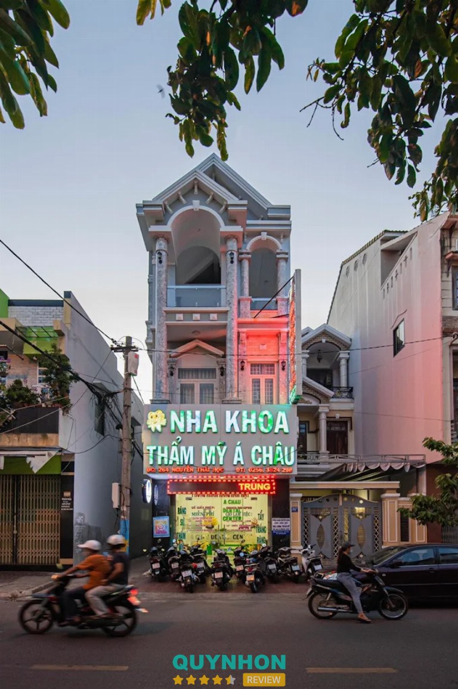
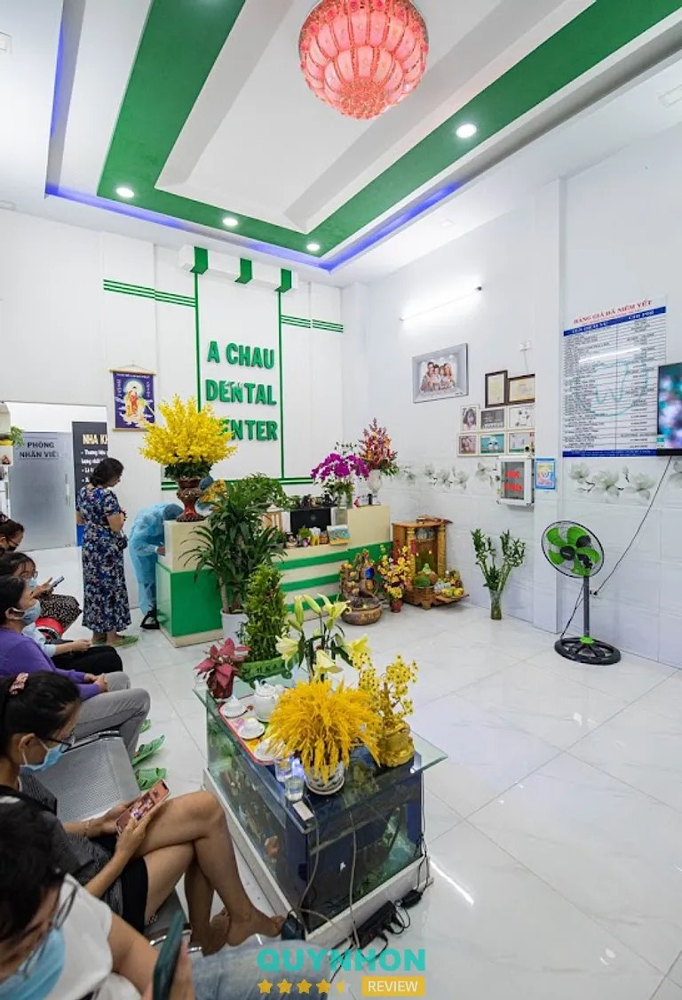
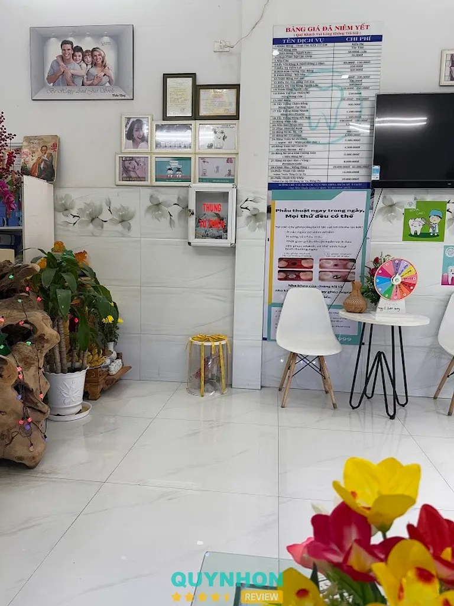
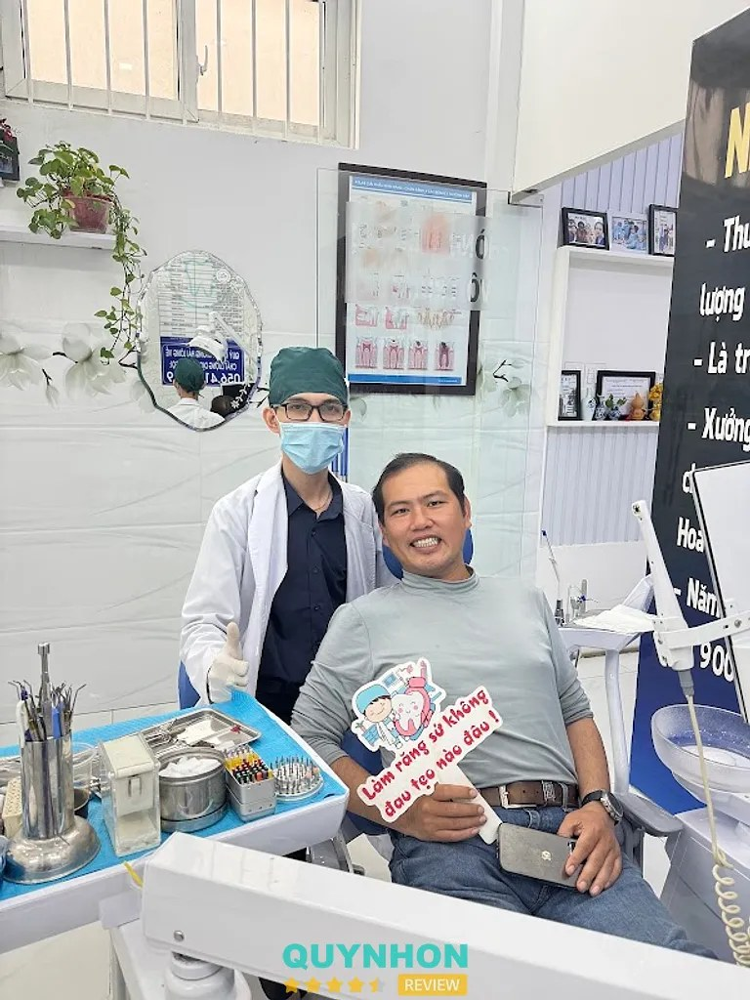

Khám & chăm sóc tổng quát
Khám răng miệng, tư vấn hướng xử lý phù hợp với tình trạng thực tế.
Liên hệ để báo giá264 Nguyễn Thái Học · Quy Nhơn Nam · Gia Lai
Phòng khám nha khoa trên đường Nguyễn Thái Học, trung tâm Quy Nhơn. Gọi để hỏi giờ tiếp nhận trong ngày và đặt lịch thăm khám.
Giờ mở cửa · Mở 24 giờ (PlacesSearch)

Không gian
Ảnh công khai trên quynhonreview (có watermark nguồn). Không phải ảnh do phòng khám cung cấp cho bản demo này.

Chữ A CHAU DENTAL CENTER, khu chờ.

Không gian trong nhà, tường ảnh.
Ghế nha khoa, khu làm việc.

Ảnh khách / nguồn phụ quynhonreview.
Đánh giá
Tổng 970 đánh giá theo PlacesSearch. Đoạn chữ dưới đây được trang quynhonreview đăng lại; chưa đọc trực tiếp toàn bộ đánh giá trên Google Maps.
★★★★★Mình làm răng sứ ở đây rất đẹp, rất hài lòng, dịch vụ tốt. Nhân viên dễ thương, bác sĩ tư vấn nhiệt tình. Ra về nhân viên còn dặn dò rất nhiều. Phòng khám sáng sủa, tiện nghi.
Thuỷ Nguyễn Thị Thu · quynhonreview (đăng lại)
★★★★★Gia đình mình khám răng ở Nha Khoa Á Châu được 9 năm. Phòng khám luôn sạch đẹp. Mình và em gái niềng răng và trồng răng implant ở đây.
Khách được trích trên quynhonreview
★★★★★Mình đã làm răng sứ tại đây 10 chiếc đã khá lâu, các nha sĩ ở đây làm rất kĩ và nhẹ nhàng, kiểm tra và dặn dò rất kĩ. Các bé nhà mình nhổ răng hay trám răng đều qua đây làm.
Tài Xế Xứ Nẫu · quynhonreview
Hỏi đáp
264 Nguyễn Thái Học, Quy Nhơn Nam, Gia Lai (Quy Nhơn; tên hành chính cũ thường gặp: phường Ngô Mây, Bình Định). Chỉ đường bằng Google Maps ở nút bên dưới.
Theo PlacesSearch (Google Maps, 12/11/2026): mở 24 giờ, tất cả các ngày. Một số trang khác ghi khung giờ khác (ví dụ 07:30–19:00 hoặc 06:00–22:00). Nên gọi 0564 159 999 trước khi đến để xác nhận giờ tiếp nhận trong ngày.
Theo PlacesSearch: 0564 159 999. Một số trang khác còn nêu 0256 3524 298. Bản demo dùng số trên Google Maps.
Chưa thấy bảng giá chính thức đăng công khai trên web. Liên hệ để báo giá sau khi thăm khám.
Không. Đây là bản đề xuất của thedeepbuild.com, dùng thông tin công khai. Chưa phải website của phòng khám.
Ghé khám
264 Nguyễn Thái Học, Quy Nhơn Nam, Gia Lai
Điện thoại: 0564 159 999
Facebook: Trang Facebook (nguồn phụ)
| Thứ Hai | Mở 24 giờ |
| Thứ Ba | Mở 24 giờ |
| Thứ Tư | Mở 24 giờ |
| Thứ Năm | Mở 24 giờ |
| Thứ Sáu | Mở 24 giờ |
| Thứ Bảy | Mở 24 giờ |
| Chủ Nhật | Mở 24 giờ |
Giờ theo PlacesSearch (Google Maps). Nguồn khác ghi khung giờ hẹp hơn — nên gọi trước.